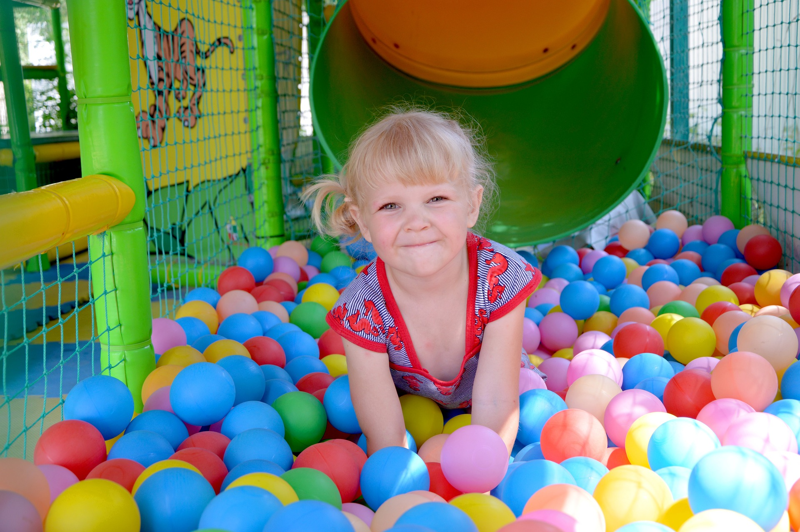
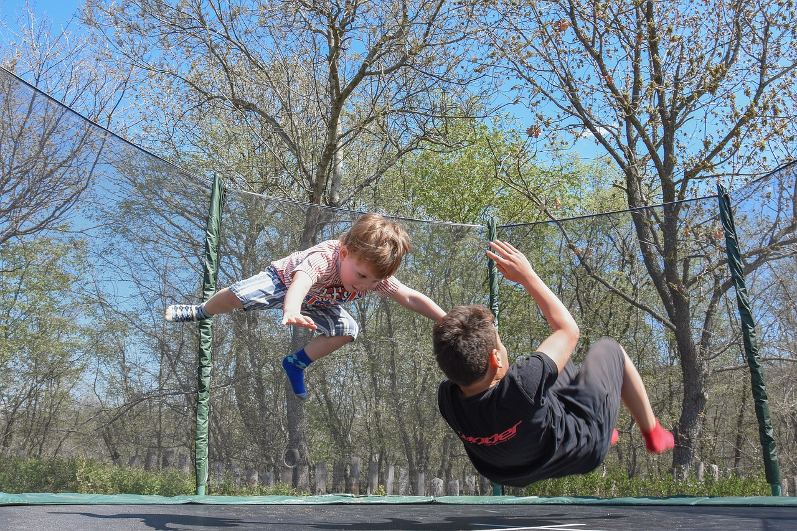

A Lépésről Lépésre Fejlesztőközpont egy gyermekek számára létrehozott, egyéni igényekhez is igazodó magánintézmény. A foglalkozások játékos formában zajlanak, figyelembe véve a résztvevők képességeit, életkori sajátosságait, egyéni életkörülményeit. Egyéni vagy kis létszámú csoportokkal dolgozunk, egy csoporton belül is differenciáltan.
Az időben megkezdett szakszerű fejlesztéssel behozhatók, megszüntethetők a hátrányok! A terápiás és fejlesztő foglalkozások hatása már néhány hónap után látványos eredményt mutat!
A foglalkozásokat nagy tapasztalattal rendelkező gyógypedagógusok, fejlesztő pedagógusok, logopédusok és terapeuták vezetik. Szakembereink a legfrissebb vizsgálati és terápiás eljárásokat, módszereket alkalmazzák. Ingyenes előadások keretében tájékoztatjuk a szülőket a szükséges tudnivalókról. Szükség esetén gyermekpszichológus és családsegítő pszichológus is segíti munkánkat.
SZOLGÁLTATÁSOK

Korai fejlesztés
A nagy és finommozgások fejlesztése mozgásos feladatok segítségével. A feladatsorok javítják a gyermek koncentrációs képességeit, segítik a figyelem jobb irányíthatóságát, a ritmusérzék és a motoros kreativitás fejlődését. 3 hónapos kortól 6 éves korig ajánljuk mozgásában ügyetlen, egyensúlyzavarral küzdő, megkésett vagy eltérő fejlődésmenetet mutató gyermekeknek.

Mozgás fejlesztés
A nagy és finommozgások fejlesztése mozgásos feladatok segítségével. A feladatsorok javítják a gyermek koncentrációs képességeit, segítik a figyelem jobb irányíthatóságát, a ritmusérzék és a motoros kreativitás fejlődését. 6 éves kortól 12 éves korig ajánljuk mozgásában ügyetlen, egyensúlyzavarral küzdő, hiperaktív, figyelemzavaros gyermekeknek.
Gyógypedagógiai fejlesztés
A gyermekek egyéni képességeinek felmérését követően az elmaradottnak ítélt területek kerülnek fejlesztésre. Megismerő (kognitív), kommunikáció és mozgás fejlesztés is lehetséges a gyermekek igényeihez igazodva, játékos keretek között, egyéni vagy kiscsoportos formában.
Kommunikációs fejlesztés
Az egyéni vagy csoportos foglalkozások fő célja a gyermekek szociális-kommunikációs, érzelmi és pszichés fejlődésének támogatása. Olyan gyermekek számára ajánljuk, akik nehezen illeszkednek be közösségbe, nehezen alkalmazkodnak, nehezen alakítanak ki társas kapcsolatot, szorongás figyelhető meg náluk, vagy magatartási problémákkal küzdenek. Online foglalkozásokra is lehetőség nyílik.
Kézügyesség fejlesztés
Az egyéni vagy csoportos foglalkozások fő célja a gyermekek kézügyességének fejlesztése. A finommotorika fejlesztése írásos, rajzolásos, mozgásos feladatokon keresztül zajlik, de használunk gyurmát, fonalakat, ollót és papírokat, különböző társasjátékokat és sporteszközöket is.
Okos foglalkozások
A foglalkozás célja a digitális kompetenciák kiépítése, fejlesztése, valamint a digitális világban rejlő lehetőségek biztonságos használatának megtanítása. Informatikai ismereteken kívül a kritikus gondolkodás kialakulását és a problémamegoldó képességek fejlesztését is célul tűztük ki. Általános iskolás korosztálynak ajánljuk.
HÍRLEVÉL
Iratkozzon fel hírlevelünkre!
A legújabb előadásainkról, programjainkról így biztosan értesül!
AKCIÓ
A hírlevélre feliratkozók 10% kedvezményt kapnak az alábbi tanfolyamok árából, amennyiben a hónap végéig jelentkeznek, és a tanfolyam árát egy összegben fizetik: